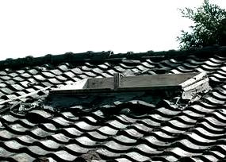
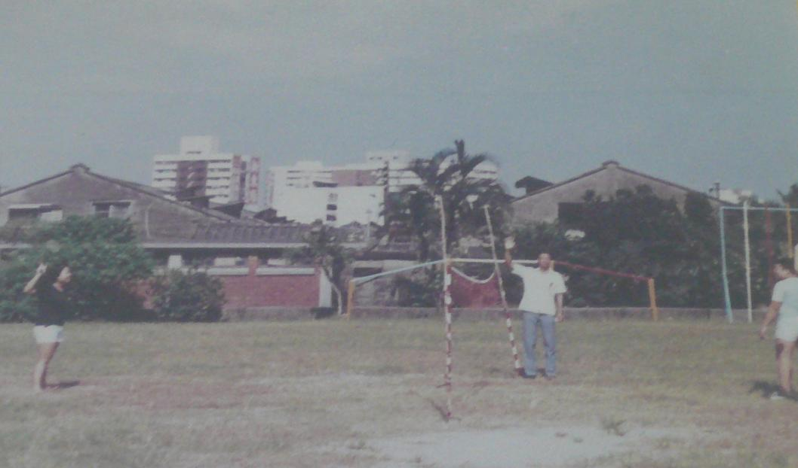

Add-on and Surrounging


|Add-on|
The average space in 44 South Village is only about 10 square-meter. Lacking spaces, there weren't bathroom or toilet inside. And to the big amount of family members, the illegal rooftop add-ons was needed. There would be a skylight, which close when it's raining and open in the other days to brighten the interior, in the attic. This special scene, rooftop add-on ,and the roof side by side became the design thought for the green hills in military village culture park.
|Surroundings|
The nearby of 44 South Village wasn't developed in 1960's. In front of the village, the tributaries of Liugong pass by. On the north side, there are the office of self management committee and the coal field, and the east side has 44 elementary, 44 nursery, health care and single dormitory. There were public toilet, 2 shelters and bunkers and so on in the village. At that time, most of neighborhood 44 villages are still cover with rice paddies, marshes, and military range.
The village is still a distance from the urban, which is basically the countryside of Taipei. Except the the settlement on Wu Xing Street has local provincial residents, most of the individual village mainly made up by mainlander nearby 44 South Village. Because of the Keelung River was't stamped yet and Xinyi District was located in the low-lying areas of Taipei, there were several ponds in the district.
 ^ sourth village and 44 elementary schoolThe basketball court in the village, residents plays the basketball, rides the bicycle and the game place in daytime,and the evening becomes the roofless theater, and social activities space. Sometimes there are residents who dry the big-clothes here. In the lane, there were some the small places, people not only sun-dry the clothes, but also do some handmade or sell goods. After school or holiday, the residents will also exercise in the XinYi elementary school playground.